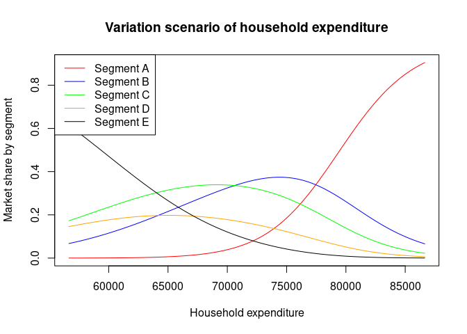

CoDaImpact provides additional tools for the interpretation of regression CoDa models. It is conceived as an extension of the compositions package.
Installation
You can install the development version of CoDaImpact from GitHub with:
# install.packages("devtools")
devtools::install_github("LukeCe/CoDaImpact")Example of a Y-compositional model
Below, we estimate a CoDa model that explains the market shares of five segments of the car market in France. To illustrate the influence of the HOUSEHOLD_EXPENDITURE on the market shares in each segment we use a VariationScenario(). In this scenario the HOUSEHOLD_EXPENDITURE is moved along a grid while all other variables are fixed to the values of the first observation.
library("CoDaImpact")
data("car_market")
model_car_segements <- lmCoDa(
ilr(cbind(SEG_A, SEG_B, SEG_C, SEG_D, SEG_E)) ~
GDP + HOUSEHOLD_EXPENDITURE + GAS_PRICE,
data = car_market)
VS <- VariationScenario(
model_car_segements,
Xvar = "HOUSEHOLD_EXPENDITURE",
obs = 1,
inc_size = 100,
n_steps = 150,
add_opposite = TRUE)
plot(x = VS$HOUSEHOLD_EXPENDITURE, y = VS$Y[,1],type = "l", col = "red",
main = "Variation scenario of household expenditure",
xlab = "Household expenditure", ylab = "Market share by segment")
lines(x = VS$HOUSEHOLD_EXPENDITURE, y = VS$Y[,2],type = "l", col = "blue" )
lines(x = VS$HOUSEHOLD_EXPENDITURE, y = VS$Y[,3],type = "l", col = "green")
lines(x = VS$HOUSEHOLD_EXPENDITURE, y = VS$Y[,4],type = "l", col = "orange")
lines(x = VS$HOUSEHOLD_EXPENDITURE, y = VS$Y[,5],type = "l", col = "black")
legend("topleft",
legend = paste0("Segment ", LETTERS[1:5]),
col = c("red", "blue", "green", "orange", "black"),
lty = 1)